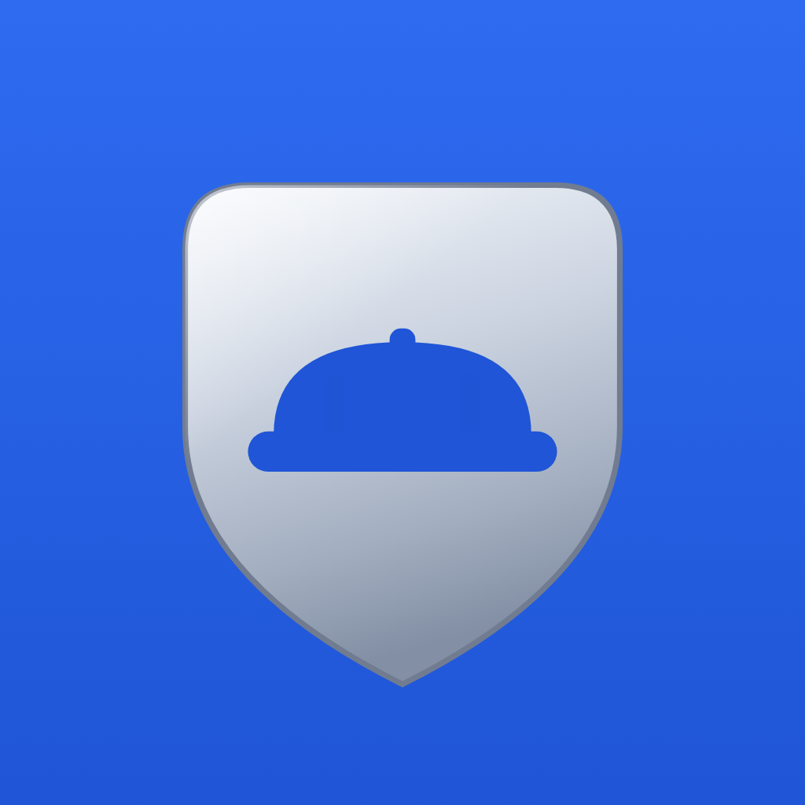

Auffanggurt, Verbindungsmittel, Falldämpfer, Höhensicherungsgerät — jedes Teil muss mindestens alle 12 Monate von einem Sachkundigen geprüft werden (DGUV Grundsatz 312-906, EN 365). GurtDex führt dein PSA-Inventar, wacht über die Ablegereife und macht jede Prüfung zum PDF-Prüfbericht mit GPS-Stempel und Fotos — gerichtsfest dokumentiert.
Persönliche Schutzausrüstung gegen Absturz rettet Leben — aber nur, wenn sie intakt ist. Deshalb verlangen BetrSichV und PSA-Benutzungsverordnung (PSA-BV) zusammen mit den DGUV Regeln 112-198 und 112-199: Vor jeder Benutzung eine Sicht- und Funktionskontrolle durch den Anwender — und mindestens alle 12 Monate eine Prüfung durch einen Sachkundigen nach EN 365 und DGUV Grundsatz 312-906.
Nach einem Sturz gilt: sofort der Benutzung entziehen — erst ein Sachkundiger entscheidet, ob das Teil zurück in den Einsatz darf. Und irgendwann ist Schluss: Die Ablegereife richtet sich nach der Herstellerangabe, bei textilen Komponenten typisch 6–10 Jahre ab Herstellungsdatum.
Passiert etwas, fragen BG, Versicherung und Gericht als Erstes nach dem Prüfnachweis genau dieses Gurts. Ohne Doku je Artikel stehst du blank da.
Vom Auffanggurt bis zum Höhensicherungsgerät — GurtDex dokumentiert jedes Teil einzeln, unveränderlich und teilbar.
Jeder Artikel einzeln erfasst — Typ, Hersteller, Seriennummer, Herstellungsdatum, erste Benutzung. GurtDex rechnet die Ablegereife mit und warnt, bevor ein Gurt aus der Frist läuft.
12 Prüfpunkte nach DGUV Grundsatz 312-906 — Gurtband & Nähte, Beschläge, Verbindungsmittel, Falldämpfer-Indikator, Karabiner-Verschluss, Kennzeichnung u. v. m. Schritt für Schritt, nichts wird vergessen.
in Ordnung, beobachten, ablegereif — der Benutzung entziehen. Jeder Mangel wird eingestuft, fotografiert und rechtssicher festgehalten.
Ein Tipp erzeugt den Prüfbericht je Artikel oder Bestand — mit GPS-Stempel, Beweisfotos und in Pro mit deinem eigenen Logo. Fertig für BG, Versicherung oder Auftraggeber.
Der Chef lädt per Code ein (GD-…) — Kolonnenführer, Sachkundige und Monteure dokumentieren gemeinsam unter einem Betrieb. Jede Prüfung zeigt, wer sie durchgeführt hat.
Prüfungen können nie bearbeitet oder gelöscht werden — Storno nur gekennzeichnet und mit Begründung. Genau diese Unveränderlichkeit überzeugt vor Gericht.
Betrieb, Bauhof oder Lager anlegen und darunter jeden PSA-Artikel mit Seriennummer und Herstellungsdatum erfassen. Der Ablegereife-Wächter läuft ab sofort mit.
Artikel wählen, die 12-Punkte-Checkliste durchgehen, Mängel per Ampel einstufen, Foto dazu — GPS- und Zeitstempel ergänzt GurtDex automatisch. Auch „alles in Ordnung" ist ein Nachweis.
Prüfbericht als PDF an Geschäftsführung, SiFa, Berufsgenossenschaft oder Auftraggeber — oder im Streitfall an den Anwalt.
GurtDex ist eine von 15 Dexware-Apps. Die Suite kostet so viel wie unsere teuerste Einzel-App — und schaltet alle Dexware-Apps auf allen deinen Geräten frei. Neue Apps kommen automatisch dazu, ohne Aufpreis.

Erhältlich direkt in jeder Dexware-App: einfach in der App auf „Pro werden" tippen und die Dexware Suite wählen.
Mehr zur Dexware Suite →💻 Fürs Web gibt's einen Haupteinstieg: dashboard.dexware.app — die Übersicht aller App-Dashboards. Dort ist auch das GurtDex-Dashboard: Standorte, Prüfungen, Ablegereife und Prüfberichte im Browser.
GurtDex ist Teil der Dexware-Familie — Pflicht-Dokumentation, die einfach funktioniert.